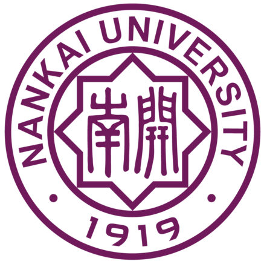

飞天小女警


团队介绍
小伙伴们比较害羞啦，都不愿意出来啦，只能介绍一下我们学校了。
南开大学的计算机和控制学科是在实力雄厚的数学学科和物理学科的基础上发展起来的。1984年为发展工学学科，南开大学将原数学系的计算机软件专业、自动控制专业和物理系的计算机应用专业整合成立了计算机与系统科学系，着力发展计算机与控制学科。1995年南开大学采用学院组织架构，将计算机与系统科学系和电子科学系整合成立了信息技术科学学院，1999年该院开始实体化运作。经过十余年的发展与建设，学院拥有六个一级学科，它们是计算机科学与技术、软件工程、控制科学与工程、光学工程、电子科学与技术、信息与通信系统。为了更好地适应当今社会经济发展需要，满足当今科技创新人才培养需求，构建南开现代工学学科体系，根据学校学科发展规划，于2013年7月对南开大学信息技术科学学院学科进行优化整合，分别组建计算机与控制工程学院和电子信息与光学工程学院。
计算机科学与控制工程学院坚持“质量为立院之本”的工作方针，贯彻“立德树人、教授治学”的理念，全面实施南开公能素质教育纲要。学院现有5个本科专业，分别为：计算机科学与技术、信息安全、自动化、智能科学与技术、物联网工程，其中计算机科学与技术专业为教育部特色专业，信息安全专业是与法学院合作的双学位试点班。